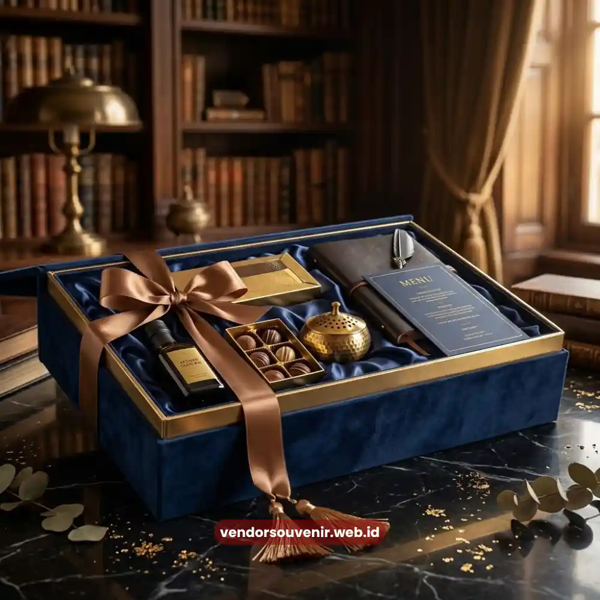
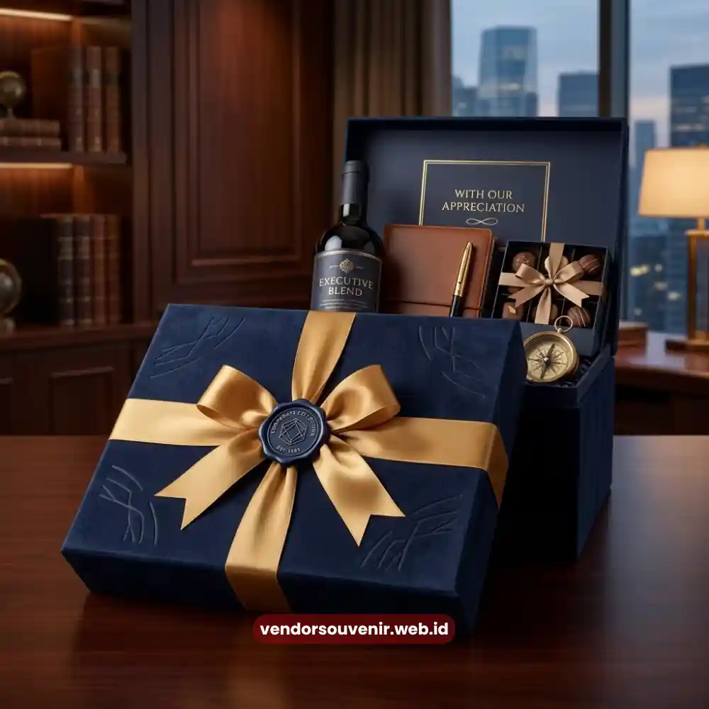

Daftar Isi
Hampers custom logo perusahaan adalah bingkisan korporat yang kemasan maupun produk di dalamnya diberi identitas visual perusahaan, seperti logo, warna brand, atau tagline.
Penambahan elemen branding ini bertujuan memperkuat pengenalan identitas perusahaan setiap kali hampers diterima dan dibuka oleh penerima.
Strategi ini banyak digunakan perusahaan untuk menjadikan hampers bukan sekadar hadiah, tetapi juga media promosi yang halus dan berkelanjutan.
- Hampers custom logo memperkuat identitas visual perusahaan di mata penerima.
- Elemen branding dapat ditambahkan pada kemasan, produk, hingga kartu ucapan.
- Konsistensi warna dan logo brand meningkatkan pengenalan perusahaan.
- Branding pada hampers berfungsi sebagai media promosi jangka panjang yang halus.
- Vendor Souvenir membantu menyesuaikan desain branding sesuai identitas perusahaan.
Mengapa Branding pada Hampers Penting bagi Perusahaan?
Branding pada hampers memberi nilai tambah karena menjadikan hadiah tersebut sebagai representasi visual perusahaan, bukan sekadar bingkisan generik.
Ketika logo dan warna brand hadir secara konsisten pada kemasan, penerima akan lebih mudah mengasosiasikan hadiah tersebut dengan perusahaan pemberi.
Selain memperkuat pengenalan brand, elemen branding pada hampers juga menciptakan kesan profesional yang mencerminkan standar kerja perusahaan.
Hampers dengan desain rapi dan identitas visual yang jelas cenderung meninggalkan kesan lebih positif dibanding hampers tanpa sentuhan branding sama sekali.
Bagian Mana Saja pada Hampers yang Bisa Diberi Logo Perusahaan?
Kemasan Luar Hampers
Kemasan luar merupakan elemen pertama yang dilihat penerima, sehingga penempatan logo di bagian ini memberikan dampak visual paling besar terhadap pengenalan brand.
Produk di Dalam Hampers
Beberapa jenis produk seperti notebook, tumbler, atau kartu nama dapat diberi logo perusahaan secara langsung.
Hal ini memastikan identitas brand tetap terlihat bahkan setelah kemasan luar dibuka atau dibuang.
Kartu Ucapan dan Label Produk
Kartu ucapan dengan identitas visual perusahaan menambah kesan personal sekaligus memperkuat pesan branding secara halus tanpa terkesan berlebihan.

Branding Kemasan Hampers Korporat
Bagaimana Menjaga Konsistensi Branding pada Hampers Perusahaan?
Konsistensi branding dapat dijaga dengan memastikan warna, jenis huruf, dan penempatan logo mengikuti panduan identitas visual perusahaan yang sudah ada.
Hal ini penting agar hampers tetap selaras dengan materi promosi lain seperti kartu nama, brosur, atau media sosial perusahaan.
Selain konsistensi visual, pemilihan bahan kemasan turut memengaruhi persepsi kualitas brand di mata penerimanya.
Bahan kemasan yang premium akan memperkuat kesan bahwa perusahaan memiliki standar kerja yang tinggi, sejalan dengan identitas brand yang ingin ditampilkan.
Apa Manfaat Jangka Panjang dari Hampers Bercabang Logo Perusahaan?
Produk hampers yang memuat logo perusahaan, terutama barang fungsional seperti tumbler atau perlengkapan kerja, berpotensi digunakan penerima dalam jangka waktu lama.
Setiap kali produk tersebut digunakan, identitas brand perusahaan turut terekspos secara berulang tanpa biaya promosi tambahan.
Manfaat ini menjadikan hampers custom logo sebagai investasi branding yang relatif efisien dibanding metode promosi konvensional lainnya.
Khususnya efisien untuk memperkuat kedekatan emosional dengan klien maupun mitra bisnis jangka panjang.

Solusi Gift Set dari Vendor Terpercaya
Kesimpulan
Hampers custom logo perusahaan bukan sekadar hadiah, melainkan strategi branding yang memperkuat identitas visual perusahaan di mata klien dan mitra bisnis.
Konsistensi logo, warna brand, dan kualitas kemasan menjadi kunci utama agar pesan branding tersampaikan secara maksimal.
Butuh Bantuan Merancang Hampers Custom Logo?
Tim ahli kami siap membantu Anda menyusun paket hadiah eksklusif yang menarik.
Pilihan barang akan disesuaikan dengan ketersediaan budget dan kebutuhan Anda.
Seluruh desain kemasan akan kami selaraskan dengan identitas visual perusahaan Anda.
Dapatkan penawaran harga terbaik untuk pesanan massal!
FAQ
Apa itu hampers custom logo perusahaan?
Hampers custom logo perusahaan adalah bingkisan korporat yang kemasan atau produknya diberi identitas visual perusahaan seperti logo dan warna brand.
Bagian mana saja pada hampers yang biasanya diberi logo?
Logo dapat ditambahkan pada kemasan luar, produk fungsional seperti notebook atau tumbler, serta kartu ucapan di dalam hampers.
Apa manfaat jangka panjang dari branding pada hampers?
Produk fungsional berlogo perusahaan berpotensi digunakan penerima dalam waktu lama, sehingga identitas brand terekspos secara berulang tanpa biaya promosi tambahan.
Maroon Souvenir
Partner Corporate Gift terpercaya di Indonesia. Berpengalaman melayani ratusan perusahaan sejak 2018.
Lihat Portofolio Kami